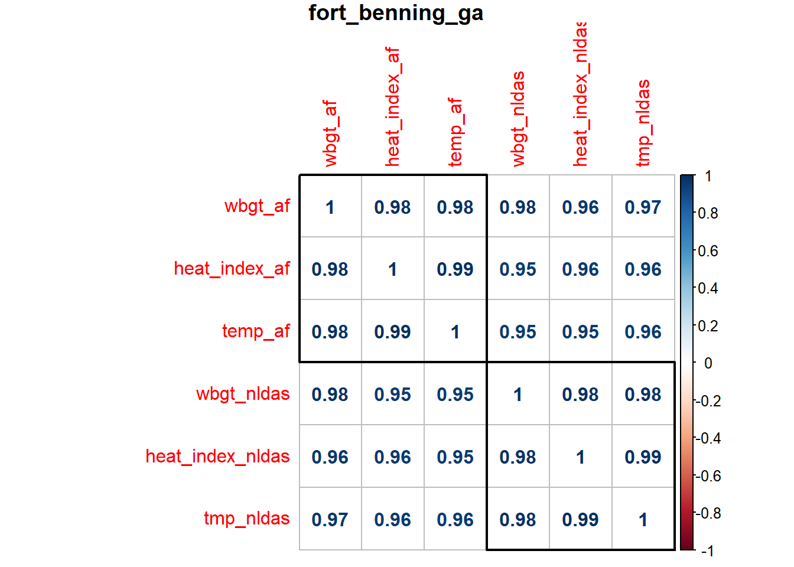
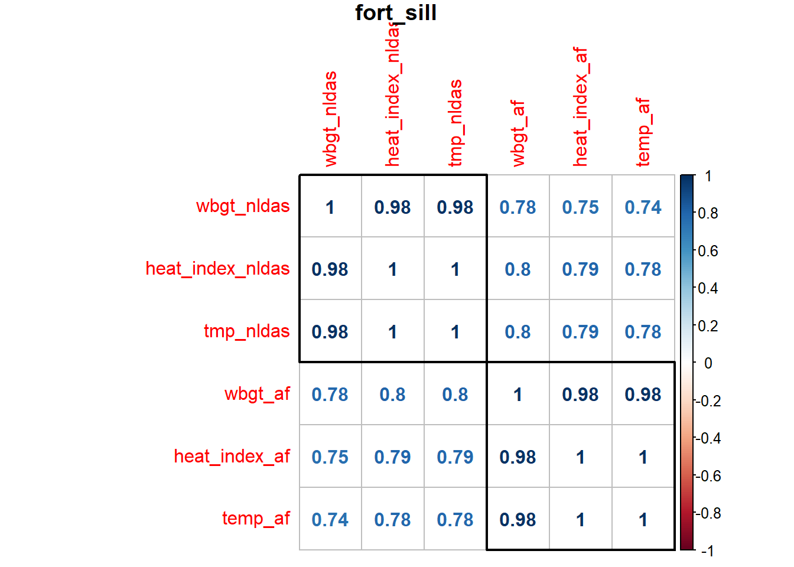
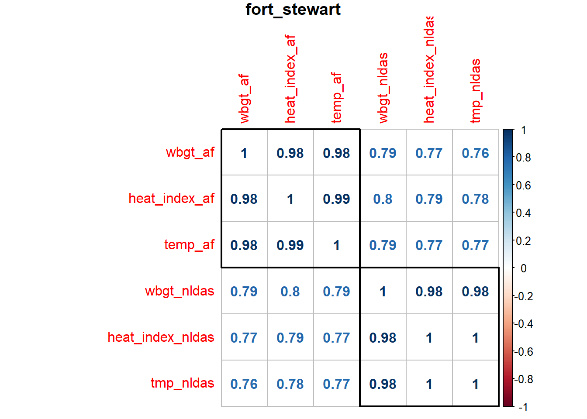
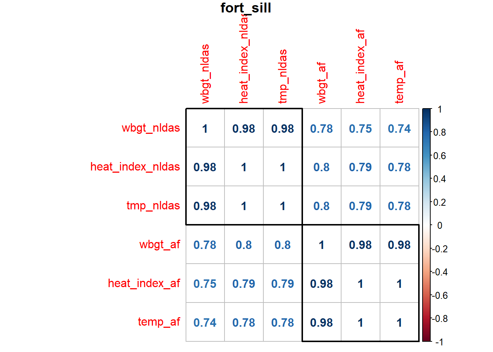
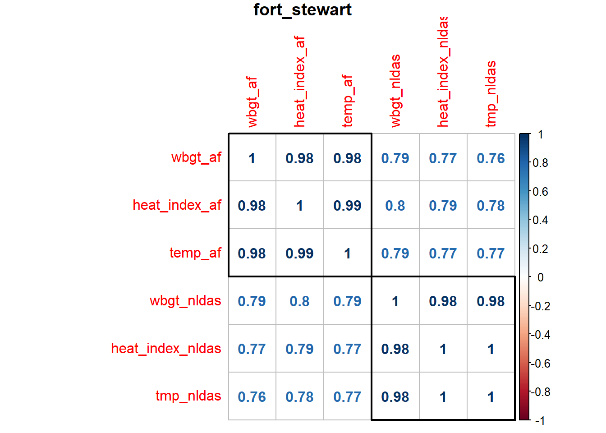

af_weather
Air Force SAR weather
This code includes reads in and combines separate Excel worksheets into a single dataframe.
The hourly data were produced in July 2019 by 14WS and provide WBGT, HI, RH, temperature (F), dew point (F) and UTCI (F).
Note: For Fort Irwin, Daegu, Hawaii, Yongsan, Red Cloud files, need to insert row on spreadsheet prior to line 25 so that header starts on line 26.
# sar_file <- "D:/sar_weather/SAR_9860_Aberdeen Proving Ground.csv"
#
sar_file_list <- list.files(path = "D:/sar_weather", pattern = "^.*\\.(csv)$") %>%
paste0("D:/sar_weather/", .)
sar_file_list %>% head()
read_sar <- function(input_file) {
read_csv((input_file), col_names = TRUE, skip = 25, na = c("", "NA")) %>%
janitor::clean_names() %>%
mutate(location = stringr::str_split((input_file), "9860_") %>% .[[1]] %>% .[2] %>%
str_split(., ".csv") %>% .[[1]] %>% .[1],
time = paste0(hour, ":", "00", ":", "00"),
date = paste(year, month, day, sep = "-"),
dttm = paste(date, time, sep = " ") %>%
flipTime::AsDateTime()) %>%
dplyr::select(-c(year, month, day, hour, time, date)) %>%
dplyr::select(location, dttm, everything()) %>%
rename(wbgt = wet_bulb_globe_temp,
rh = relitive_humidity)
}
sar_df <- furrr::future_map_dfr(sar_file_list, read_sar, .progress = TRUE)
sar_df <- sar_df %>% select(-c(x11, x12, x13))
sar_dfSave file and filter locations
# save dataframe to .csv file
# save as .rds
# write_csv(sar_df, "D:/sar_df.csv", append = FALSE)
# sar_df <- read_csv("D:/sar_weather/sar_df.csv")
sar_df <- sar_df %>%
filter(location %in% c("Fort Benning", "Fort Bragg","Fort Campbell",
"Fort Jackson", "Fort Polk", "Fort Hood",
"Fort Stewart", "Fort Leonard Wood", "Fort Riley",
"Fort Irwin", "Fort Bliss", "Fort Lewis",
"Fort Sill", "Fort Carson", "Fort Gordon",
"Fort Drum", "JB San Antonio")
)
# write_rds(sar_df, path = "data/sar_df.rds")sar_df <- read_rds("data/sar_df.rds")
sar_df## # A tibble: 1,506,584 x 8
## location dttm wbgt heat_index rh temp_f dewp_f utci_f
## <chr> <dttm> <dbl> <dbl> <dbl> <dbl> <dbl> <dbl>
## 1 Fort Benning 2008-01-01 00:00:00 NA NA 100 46.4 46.4 51.6
## 2 Fort Benning 2008-01-01 01:00:00 44.2 44.6 93.3 44.6 42.8 37.9
## 3 Fort Benning 2008-01-01 02:00:00 NA 41 100 41 41 46.4
## 4 Fort Benning 2008-01-01 03:00:00 40.6 41 93.2 41 39.2 46.2
## 5 Fort Benning 2008-01-01 04:00:00 NA 37.4 100 37.4 37.4 42.8
## 6 Fort Benning 2008-01-01 05:00:00 NA 37.4 100 37.4 37.4 35.8
## 7 Fort Benning 2008-01-01 06:00:00 NA 35.6 100 35.6 35.6 33.8
## 8 Fort Benning 2008-01-01 07:00:00 NA 35.6 100 35.6 35.6 30.1
## 9 Fort Benning 2008-01-01 08:00:00 35.2 35.6 93.0 35.6 33.8 40.8
## 10 Fort Benning 2008-01-01 09:00:00 35.2 35.6 93.0 35.6 33.8 29.9
## # ... with 1,506,574 more rows# Location counts
sar_df %>%
count(location) %>%
head() %>%
knitr::kable() %>%
kable_styling(bootstrap_options = c("striped", "condensed", full_width = FALSE))| location | n |
|---|---|
| Fort Benning | 95702 |
| Fort Bliss | 96087 |
| Fort Bragg | 94556 |
| Fort Campbell | 95912 |
| Fort Carson | 95281 |
| Fort Drum | 95643 |
Exploratory Plots
Hour of day mean WBGT
# Plot July hourly WBGT
sar_df %>%
filter(months(dttm) == "July") %>%
group_by(location, lubridate::year(dttm), lubridate::hour(dttm)) %>%
summarise(mean_wbgt = mean(wbgt, na.rm = TRUE)) %>%
rename(year = `lubridate::year(dttm)`,
hour = `lubridate::hour(dttm)`) %>%
ggplot(aes(x = hour, y = mean_wbgt, color = factor(year))) +
geom_point() +
geom_smooth(aes(group = factor(year)), size = 0.6, se = FALSE) +
facet_wrap(~location) +
labs(
title = "Mean July WBGT (deg F) by Hour of Day (UTC)",
x = "Hour of day (UTC)",
y = "Mean WBGT (deg F)",
caption = "Data from 14WS/CXO, produced 29 July 2019") +
theme_bw() +
viridis::scale_color_viridis(
name = "Year",
discrete = TRUE,
direction = -1,
option = "inferno") ## `geom_smooth()` using method = 'loess' and formula 'y ~ x'
Yearly mean temperature boxplots
# Locations 1 - 12
sar_df %>%
dplyr::select(location, dttm, temp_f) %>%
mutate(location = as_factor(location),
year = as.factor(lubridate::year(dttm))) %>%
filter(as.numeric(location) > 2) %>%
filter(as.numeric(location) <= 11) %>%
group_by(location, lubridate::year(dttm)) %>%
ggplot(aes(x = year,
y = temp_f)) +
geom_boxplot() +
facet_wrap(~location, ncol = 3) +
labs(
title = "Yearly mean temperatures (deg F)",
x = "Year",
y = "Temperature (deg F)",
caption = "Data from 14WS/CXO, produced 29 July 2019") +
theme_bw() +
theme(axis.text.x = element_text(angle = 45, size = 6, hjust = 1))## Warning: Removed 882 rows containing non-finite values (stat_boxplot).
Compare with NLDAS-2 temperature and heat indices
nldas_wide <- read_rds("data/nldas_wide.rds")
nldas_wide ## # A tibble: 6,573,925 x 19
## utc_dttm local_dttm installation longitude latitude TMP
## <dttm> <dttm> <chr> <dbl> <dbl> <dbl>
## 1 1990-01-01 00:00:00 1989-12-31 18:00:00 eglin_afb -86.5 30.6 291.
## 2 1990-01-01 01:00:00 1989-12-31 19:00:00 eglin_afb -86.5 30.6 290.
## 3 1990-01-01 02:00:00 1989-12-31 20:00:00 eglin_afb -86.5 30.6 289.
## 4 1990-01-01 03:00:00 1989-12-31 21:00:00 eglin_afb -86.5 30.6 288.
## 5 1990-01-01 04:00:00 1989-12-31 22:00:00 eglin_afb -86.5 30.6 287.
## 6 1990-01-01 05:00:00 1989-12-31 23:00:00 eglin_afb -86.5 30.6 287.
## 7 1990-01-01 06:00:00 1990-01-01 00:00:00 eglin_afb -86.5 30.6 286.
## 8 1990-01-01 07:00:00 1990-01-01 01:00:00 eglin_afb -86.5 30.6 285.
## 9 1990-01-01 08:00:00 1990-01-01 02:00:00 eglin_afb -86.5 30.6 284.
## 10 1990-01-01 09:00:00 1990-01-01 03:00:00 eglin_afb -86.5 30.6 283.
## # ... with 6,573,915 more rows, and 13 more variables: SPFH <dbl>, PRES <dbl>,
## # UGRD <dbl>, VGRD <dbl>, DSWRF <dbl>, windspeed <dbl>, tmp_f <dbl>,
## # tmp_c <dbl>, rh <dbl>, dp_c <dbl>, heat_index <dbl>, wbgt <dbl>,
## # wbgt_f <dbl>af_nldas_compare <-
sar_df %>%
mutate(location =
str_to_lower(location, locale = "en"),
location = str_replace_all(location, " ", "_"),
location = recode(location, fort_benning = "fort_benning_ga",
fort_irwin = "ntc_and_fort_irwin",
jb_san_antonio = "fort_sam_houston")) %>%
left_join(nldas_wide, by = c("location" = "installation", "dttm" = "utc_dttm")) %>%
dplyr::select(location, dttm, wbgt.x, heat_index.x, temp_f, wbgt_f, heat_index.y, tmp_f) %>%
rename(installation = location,
utc_dttm = dttm,
wbgt_af = wbgt.x,
heat_index_af = heat_index.x,
temp_af = temp_f,
wbgt_nldas = wbgt_f,
heat_index_nldas = heat_index.y,
tmp_nldas = tmp_f)
af_nldas_compare## # A tibble: 1,506,584 x 8
## installation utc_dttm wbgt_af heat_index_af temp_af wbgt_nldas
## <chr> <dttm> <dbl> <dbl> <dbl> <dbl>
## 1 fort_bennin~ 2008-01-01 00:00:00 NA NA 46.4 46.4
## 2 fort_bennin~ 2008-01-01 01:00:00 44.2 44.6 44.6 46.3
## 3 fort_bennin~ 2008-01-01 02:00:00 NA 41 41 46.2
## 4 fort_bennin~ 2008-01-01 03:00:00 40.6 41 41 46.1
## 5 fort_bennin~ 2008-01-01 04:00:00 NA 37.4 37.4 45.2
## 6 fort_bennin~ 2008-01-01 05:00:00 NA 37.4 37.4 44.4
## 7 fort_bennin~ 2008-01-01 06:00:00 NA 35.6 35.6 43.5
## 8 fort_bennin~ 2008-01-01 07:00:00 NA 35.6 35.6 42.8
## 9 fort_bennin~ 2008-01-01 08:00:00 35.2 35.6 35.6 42.1
## 10 fort_bennin~ 2008-01-01 09:00:00 35.2 35.6 35.6 41.4
## # ... with 1,506,574 more rows, and 2 more variables: heat_index_nldas <dbl>,
## # tmp_nldas <dbl>Station - NLDAS Comparison Plots (2008-2018)
Temperature Comparison
af_nldas_compare %>%
dplyr::select(installation, utc_dttm, temp_af, tmp_nldas) %>%
na.omit() %>%
ggplot(aes(x = temp_af, y = tmp_nldas)) +
geom_point(alpha = 0.2) +
geom_smooth(method = lm, se = FALSE) +
facet_wrap(~installation, ncol = 3) +
labs(
title = "Temperature Comparison",
x = "Air Force Station",
y = "NLDAS") +
theme_bw()
Heat Index Comparison
af_nldas_compare %>%
dplyr::select(installation, utc_dttm, heat_index_af, heat_index_nldas) %>%
na.omit() %>%
ggplot(aes(x = heat_index_af, y = heat_index_nldas)) +
geom_point(alpha = 0.2) +
geom_smooth(method = lm, se = FALSE) +
facet_wrap(~installation, ncol = 3) +
labs(
title = "Heat Index Comparison",
x = "Air Force Station",
y = "NLDAS") +
theme_bw()WBGT Comparison
af_nldas_compare %>%
dplyr::select(installation, utc_dttm, wbgt_af, wbgt_nldas) %>%
na.omit() %>%
ggplot(aes(x = wbgt_af, y = wbgt_nldas)) +
geom_point(alpha = 0.2) +
geom_smooth(method = lm, se = FALSE) +
facet_wrap(~installation, ncol = 3) +
labs(
title = "WBGT Comparison",
x = "Air Force Station",
y = "NLDAS") +
theme_bw()Statistical comparison
# Nest by each installation
af_nldas_nest <-
af_nldas_compare %>%
nest(data = utc_dttm:tmp_nldas)
af_nldas_nest## # A tibble: 16 x 2
## installation data
## <chr> <list<df[,7]>>
## 1 fort_benning_ga [95,702 x 7]
## 2 fort_bliss [96,087 x 7]
## 3 fort_bragg [94,556 x 7]
## 4 fort_campbell [95,912 x 7]
## 5 fort_carson [95,281 x 7]
## 6 fort_drum [95,643 x 7]
## 7 fort_gordon [95,970 x 7]
## 8 fort_hood [95,801 x 7]
## 9 ntc_and_fort_irwin [75,650 x 7]
## 10 fort_jackson [96,005 x 7]
## 11 fort_leonard_wood [94,699 x 7]
## 12 fort_polk [95,476 x 7]
## 13 fort_riley [95,023 x 7]
## 14 fort_sill [94,511 x 7]
## 15 fort_stewart [94,201 x 7]
## 16 fort_sam_houston [96,067 x 7]Correlation
# Correlation function
cor_fun = function(df) {
df %>%
dplyr::select(2:7) %>%
cor(use = "pairwise.complete.obs")
}
# Map function over each installation
cor_nest <-
map(af_nldas_nest$data, cor_fun)
# Add installation names to list elements
names(cor_nest) <- af_nldas_nest$installation
# Map corrplots
map2(.x = cor_nest, .y = names(cor_nest), ~ corrplot(.x, method = "number", order = "hclust", addrect = 2, title = .y, mar = c(0, 0, 1, 0)))
 

## $fort_benning_ga
## wbgt_af heat_index_af temp_af wbgt_nldas heat_index_nldas
## wbgt_af 1.0000000 0.9834040 0.9825707 0.9820797 0.9624705
## heat_index_af 0.9834040 1.0000000 0.9930620 0.9539140 0.9577692
## temp_af 0.9825707 0.9930620 1.0000000 0.9543030 0.9501707
## wbgt_nldas 0.9820797 0.9539140 0.9543030 1.0000000 0.9800206
## heat_index_nldas 0.9624705 0.9577692 0.9501707 0.9800206 1.0000000
## tmp_nldas 0.9662831 0.9576572 0.9583627 0.9832904 0.9940767
## tmp_nldas
## wbgt_af 0.9662831
## heat_index_af 0.9576572
## temp_af 0.9583627
## wbgt_nldas 0.9832904
## heat_index_nldas 0.9940767
## tmp_nldas 1.0000000
##
## $fort_bliss
## wbgt_nldas heat_index_nldas tmp_nldas wbgt_af heat_index_af
## wbgt_nldas 1.0000000 0.9895652 0.9914806 0.7763626 0.7297962
## heat_index_nldas 0.9895652 1.0000000 0.9973810 0.7886121 0.7502955
## tmp_nldas 0.9914806 0.9973810 1.0000000 0.7904365 0.7529498
## wbgt_af 0.7763626 0.7886121 0.7904365 1.0000000 0.9656590
## heat_index_af 0.7297962 0.7502955 0.7529498 0.9656590 1.0000000
## temp_af 0.7114986 0.7327696 0.7356572 0.9473655 0.9917228
## temp_af
## wbgt_nldas 0.7114986
## heat_index_nldas 0.7327696
## tmp_nldas 0.7356572
## wbgt_af 0.9473655
## heat_index_af 0.9917228
## temp_af 1.0000000
##
## $fort_bragg
## wbgt_nldas heat_index_nldas tmp_nldas wbgt_af heat_index_af
## wbgt_nldas 1.0000000 0.9865720 0.9908035 0.9027882 0.8892861
## heat_index_nldas 0.9865720 1.0000000 0.9940969 0.8872969 0.8882969
## tmp_nldas 0.9908035 0.9940969 1.0000000 0.8908050 0.8870892
## wbgt_af 0.9027882 0.8872969 0.8908050 1.0000000 0.9833214
## heat_index_af 0.8892861 0.8882969 0.8870892 0.9833214 1.0000000
## temp_af 0.8873353 0.8821196 0.8849170 0.9824168 0.9953955
## temp_af
## wbgt_nldas 0.8873353
## heat_index_nldas 0.8821196
## tmp_nldas 0.8849170
## wbgt_af 0.9824168
## heat_index_af 0.9953955
## temp_af 1.0000000
##
## $fort_campbell
## wbgt_af heat_index_af temp_af wbgt_nldas heat_index_nldas
## wbgt_af 1.0000000 0.9879411 0.9875604 0.7580489 0.7478947
## heat_index_af 0.9879411 1.0000000 0.9960290 0.7482642 0.7503827
## temp_af 0.9875604 0.9960290 1.0000000 0.7422721 0.7449986
## wbgt_nldas 0.7580489 0.7482642 0.7422721 1.0000000 0.9584095
## heat_index_nldas 0.7478947 0.7503827 0.7449986 0.9584095 1.0000000
## tmp_nldas 0.7336172 0.7365455 0.7317365 0.9485461 0.9958633
## tmp_nldas
## wbgt_af 0.7336172
## heat_index_af 0.7365455
## temp_af 0.7317365
## wbgt_nldas 0.9485461
## heat_index_nldas 0.9958633
## tmp_nldas 1.0000000
##
## $fort_carson
## wbgt_af heat_index_af temp_af wbgt_nldas heat_index_nldas
## wbgt_af 1.0000000 0.9780460 0.9738596 0.9128302 0.8971852
## heat_index_af 0.9780460 1.0000000 0.9976830 0.8706556 0.8784742
## temp_af 0.9738596 0.9976830 1.0000000 0.8683189 0.8760786
## wbgt_nldas 0.9128302 0.8706556 0.8683189 1.0000000 0.9564151
## heat_index_nldas 0.8971852 0.8784742 0.8760786 0.9564151 1.0000000
## tmp_nldas 0.8932246 0.8775928 0.8763795 0.9506569 0.9965843
## tmp_nldas
## wbgt_af 0.8932246
## heat_index_af 0.8775928
## temp_af 0.8763795
## wbgt_nldas 0.9506569
## heat_index_nldas 0.9965843
## tmp_nldas 1.0000000
##
## $fort_drum
## wbgt_af heat_index_af temp_af wbgt_nldas heat_index_nldas
## wbgt_af 1.0000000 0.9928388 0.9934133 0.8247883 0.8351915
## heat_index_af 0.9928388 1.0000000 0.9987695 0.8010680 0.8187309
## temp_af 0.9934133 0.9987695 1.0000000 0.8023513 0.8184507
## wbgt_nldas 0.8247883 0.8010680 0.8023513 1.0000000 0.9811662
## heat_index_nldas 0.8351915 0.8187309 0.8184507 0.9811662 1.0000000
## tmp_nldas 0.8247640 0.8067373 0.8077562 0.9860395 0.9929356
## tmp_nldas
## wbgt_af 0.8247640
## heat_index_af 0.8067373
## temp_af 0.8077562
## wbgt_nldas 0.9860395
## heat_index_nldas 0.9929356
## tmp_nldas 1.0000000
##
## $fort_gordon
## wbgt_af heat_index_af temp_af wbgt_nldas heat_index_nldas
## wbgt_af 1.0000000 0.9825710 0.9806068 0.8050837 0.7989776
## heat_index_af 0.9825710 1.0000000 0.9944190 0.8025202 0.8124422
## temp_af 0.9806068 0.9944190 1.0000000 0.7982817 0.8042375
## wbgt_nldas 0.8050837 0.8025202 0.7982817 1.0000000 0.9775387
## heat_index_nldas 0.7989776 0.8124422 0.8042375 0.9775387 1.0000000
## tmp_nldas 0.7918254 0.8072097 0.8012221 0.9711642 0.9955499
## tmp_nldas
## wbgt_af 0.7918254
## heat_index_af 0.8072097
## temp_af 0.8012221
## wbgt_nldas 0.9711642
## heat_index_nldas 0.9955499
## tmp_nldas 1.0000000
##
## $fort_hood
## wbgt_nldas heat_index_nldas tmp_nldas wbgt_af heat_index_af
## wbgt_nldas 1.0000000 0.9809332 0.9837475 0.7804747 0.7634902
## heat_index_nldas 0.9809332 1.0000000 0.9952536 0.7971959 0.7994831
## tmp_nldas 0.9837475 0.9952536 1.0000000 0.7995704 0.7984041
## wbgt_af 0.7804747 0.7971959 0.7995704 1.0000000 0.9784228
## heat_index_af 0.7634902 0.7994831 0.7984041 0.9784228 1.0000000
## temp_af 0.7503761 0.7871348 0.7882601 0.9714961 0.9946496
## temp_af
## wbgt_nldas 0.7503761
## heat_index_nldas 0.7871348
## tmp_nldas 0.7882601
## wbgt_af 0.9714961
## heat_index_af 0.9946496
## temp_af 1.0000000
##
## $ntc_and_fort_irwin
## wbgt_nldas heat_index_nldas tmp_nldas wbgt_af heat_index_af
## wbgt_nldas 1.0000000 0.9836065 0.9870577 0.6979008 0.6768565
## heat_index_nldas 0.9836065 1.0000000 0.9950599 0.7413162 0.7273852
## tmp_nldas 0.9870577 0.9950599 1.0000000 0.7351440 0.7183684
## wbgt_af 0.6979008 0.7413162 0.7351440 1.0000000 0.9683445
## heat_index_af 0.6768565 0.7273852 0.7183684 0.9683445 1.0000000
## temp_af 0.6772163 0.7306334 0.7206142 0.9620363 0.9946375
## temp_af
## wbgt_nldas 0.6772163
## heat_index_nldas 0.7306334
## tmp_nldas 0.7206142
## wbgt_af 0.9620363
## heat_index_af 0.9946375
## temp_af 1.0000000
##
## $fort_jackson
## wbgt_nldas heat_index_nldas tmp_nldas wbgt_af heat_index_af
## wbgt_nldas 1.0000000 0.9861300 0.9860350 0.8055805 0.8138331
## heat_index_nldas 0.9861300 1.0000000 0.9968925 0.7885890 0.8082088
## tmp_nldas 0.9860350 0.9968925 1.0000000 0.7867152 0.8056704
## wbgt_af 0.8055805 0.7885890 0.7867152 1.0000000 0.9827883
## heat_index_af 0.8138331 0.8082088 0.8056704 0.9827883 1.0000000
## temp_af 0.8070318 0.7988324 0.7981269 0.9799866 0.9946775
## temp_af
## wbgt_nldas 0.8070318
## heat_index_nldas 0.7988324
## tmp_nldas 0.7981269
## wbgt_af 0.9799866
## heat_index_af 0.9946775
## temp_af 1.0000000
##
## $fort_leonard_wood
## wbgt_af heat_index_af temp_af wbgt_nldas heat_index_nldas
## wbgt_af 1.0000000 0.9882921 0.9879350 0.8647647 0.8543280
## heat_index_af 0.9882921 1.0000000 0.9966871 0.8480951 0.8538908
## temp_af 0.9879350 0.9966871 1.0000000 0.8455665 0.8500911
## wbgt_nldas 0.8647647 0.8480951 0.8455665 1.0000000 0.9662278
## heat_index_nldas 0.8543280 0.8538908 0.8500911 0.9662278 1.0000000
## tmp_nldas 0.8506349 0.8512813 0.8485027 0.9649527 0.9967298
## tmp_nldas
## wbgt_af 0.8506349
## heat_index_af 0.8512813
## temp_af 0.8485027
## wbgt_nldas 0.9649527
## heat_index_nldas 0.9967298
## tmp_nldas 1.0000000
##
## $fort_polk
## wbgt_af heat_index_af temp_af wbgt_nldas heat_index_nldas
## wbgt_af 1.0000000 0.9827996 0.9811375 0.7225645 0.7049658
## heat_index_af 0.9827996 1.0000000 0.9936098 0.7505370 0.7440206
## temp_af 0.9811375 0.9936098 1.0000000 0.7442236 0.7315476
## wbgt_nldas 0.7225645 0.7505370 0.7442236 1.0000000 0.9534184
## heat_index_nldas 0.7049658 0.7440206 0.7315476 0.9534184 1.0000000
## tmp_nldas 0.7001213 0.7409770 0.7283940 0.9522402 0.9971298
## tmp_nldas
## wbgt_af 0.7001213
## heat_index_af 0.7409770
## temp_af 0.7283940
## wbgt_nldas 0.9522402
## heat_index_nldas 0.9971298
## tmp_nldas 1.0000000
##
## $fort_riley
## wbgt_af heat_index_af temp_af wbgt_nldas heat_index_nldas
## wbgt_af 1.0000000 0.9887196 0.9880474 0.7514029 0.7242227
## heat_index_af 0.9887196 1.0000000 0.9973415 0.7445115 0.7242057
## temp_af 0.9880474 0.9973415 1.0000000 0.7442317 0.7230097
## wbgt_nldas 0.7514029 0.7445115 0.7442317 1.0000000 0.9783105
## heat_index_nldas 0.7242227 0.7242057 0.7230097 0.9783105 1.0000000
## tmp_nldas 0.7292411 0.7285480 0.7280226 0.9814164 0.9973682
## tmp_nldas
## wbgt_af 0.7292411
## heat_index_af 0.7285480
## temp_af 0.7280226
## wbgt_nldas 0.9814164
## heat_index_nldas 0.9973682
## tmp_nldas 1.0000000
##
## $fort_sill
## wbgt_nldas heat_index_nldas tmp_nldas wbgt_af heat_index_af
## wbgt_nldas 1.0000000 0.9810833 0.9841709 0.7809733 0.7532541
## heat_index_nldas 0.9810833 1.0000000 0.9953773 0.8039849 0.7920707
## tmp_nldas 0.9841709 0.9953773 1.0000000 0.8037776 0.7889194
## wbgt_af 0.7809733 0.8039849 0.8037776 1.0000000 0.9849734
## heat_index_af 0.7532541 0.7920707 0.7889194 0.9849734 1.0000000
## temp_af 0.7442110 0.7817647 0.7810580 0.9810180 0.9957021
## temp_af
## wbgt_nldas 0.7442110
## heat_index_nldas 0.7817647
## tmp_nldas 0.7810580
## wbgt_af 0.9810180
## heat_index_af 0.9957021
## temp_af 1.0000000
##
## $fort_stewart
## wbgt_af heat_index_af temp_af wbgt_nldas heat_index_nldas
## wbgt_af 1.0000000 0.9828353 0.9823206 0.7931280 0.7708381
## heat_index_af 0.9828353 1.0000000 0.9928480 0.7965257 0.7903917
## temp_af 0.9823206 0.9928480 1.0000000 0.7850296 0.7744475
## wbgt_nldas 0.7931280 0.7965257 0.7850296 1.0000000 0.9813752
## heat_index_nldas 0.7708381 0.7903917 0.7744475 0.9813752 1.0000000
## tmp_nldas 0.7645525 0.7845275 0.7706630 0.9777115 0.9967269
## tmp_nldas
## wbgt_af 0.7645525
## heat_index_af 0.7845275
## temp_af 0.7706630
## wbgt_nldas 0.9777115
## heat_index_nldas 0.9967269
## tmp_nldas 1.0000000
##
## $fort_sam_houston
## wbgt_af wbgt_nldas heat_index_nldas tmp_nldas heat_index_af
## wbgt_af 1.0000000 0.9710813 0.9505221 0.9408577 0.9757757
## wbgt_nldas 0.9710813 1.0000000 0.9738592 0.9647768 0.9412858
## heat_index_nldas 0.9505221 0.9738592 1.0000000 0.9941902 0.9594756
## tmp_nldas 0.9408577 0.9647768 0.9941902 1.0000000 0.9554562
## heat_index_af 0.9757757 0.9412858 0.9594756 0.9554562 1.0000000
## temp_af 0.9669947 0.9352015 0.9562482 0.9601100 0.9930760
## temp_af
## wbgt_af 0.9669947
## wbgt_nldas 0.9352015
## heat_index_nldas 0.9562482
## tmp_nldas 0.9601100
## heat_index_af 0.9930760
## temp_af 1.0000000Regression
# Nest by each installation, linear models for Temp, Heat Index, WBGT
af_nldas_lm <-
af_nldas_nest %>%
mutate(temp_lm = map(data, ~ lm(tmp_nldas ~ temp_af, data = .)),
heat_index_lm = map(data, ~ lm(heat_index_nldas ~ heat_index_af, data = .)),
wbgt_lm = map(data, ~ lm(wbgt_nldas ~ wbgt_af, data = .)),
temp_glance = map(temp_lm, broom::glance),
temp_tidy = map(temp_lm, broom::tidy),
heat_index_glance = map(heat_index_lm, broom::glance),
heat_index_tidy = map(heat_index_lm, broom::tidy),
wbgt_glance = map(wbgt_lm, broom::glance),
wbgt_tidy = map(wbgt_lm, broom::tidy))
af_nldas_lm## # A tibble: 16 x 11
## installation data temp_lm heat_index_lm wbgt_lm temp_glance temp_tidy
## <chr> <list<df[,7> <list> <list> <list> <list> <list>
## 1 fort_bennin~ [95,702 x 7] <lm> <lm> <lm> <tibble [1~ <tibble ~
## 2 fort_bliss [96,087 x 7] <lm> <lm> <lm> <tibble [1~ <tibble ~
## 3 fort_bragg [94,556 x 7] <lm> <lm> <lm> <tibble [1~ <tibble ~
## 4 fort_campbe~ [95,912 x 7] <lm> <lm> <lm> <tibble [1~ <tibble ~
## 5 fort_carson [95,281 x 7] <lm> <lm> <lm> <tibble [1~ <tibble ~
## 6 fort_drum [95,643 x 7] <lm> <lm> <lm> <tibble [1~ <tibble ~
## 7 fort_gordon [95,970 x 7] <lm> <lm> <lm> <tibble [1~ <tibble ~
## 8 fort_hood [95,801 x 7] <lm> <lm> <lm> <tibble [1~ <tibble ~
## 9 ntc_and_for~ [75,650 x 7] <lm> <lm> <lm> <tibble [1~ <tibble ~
## 10 fort_jackson [96,005 x 7] <lm> <lm> <lm> <tibble [1~ <tibble ~
## 11 fort_leonar~ [94,699 x 7] <lm> <lm> <lm> <tibble [1~ <tibble ~
## 12 fort_polk [95,476 x 7] <lm> <lm> <lm> <tibble [1~ <tibble ~
## 13 fort_riley [95,023 x 7] <lm> <lm> <lm> <tibble [1~ <tibble ~
## 14 fort_sill [94,511 x 7] <lm> <lm> <lm> <tibble [1~ <tibble ~
## 15 fort_stewart [94,201 x 7] <lm> <lm> <lm> <tibble [1~ <tibble ~
## 16 fort_sam_ho~ [96,067 x 7] <lm> <lm> <lm> <tibble [1~ <tibble ~
## # ... with 4 more variables: heat_index_glance <list>, heat_index_tidy <list>,
## # wbgt_glance <list>, wbgt_tidy <list># Linear Models Summary Table
# Temperature
af_nldas_lm %>%
unnest(temp_tidy) %>%
filter(term == "temp_af") %>%
dplyr::select(installation, estimate:p.value) %>%
knitr::kable(digits = 4) %>%
kable_styling(bootstrap_options = "striped")| installation | estimate | std.error | statistic | p.value |
|---|---|---|---|---|
| fort_benning_ga | 0.9427 | 0.0009 | 1038.0075 | 0 |
| fort_bliss | 0.7836 | 0.0023 | 336.6411 | 0 |
| fort_bragg | 0.9806 | 0.0017 | 583.8715 | 0 |
| fort_campbell | 0.5938 | 0.0018 | 332.4484 | 0 |
| fort_carson | 0.7624 | 0.0014 | 561.4599 | 0 |
| fort_drum | 0.5962 | 0.0014 | 423.4541 | 0 |
| fort_gordon | 0.8646 | 0.0021 | 414.4503 | 0 |
| fort_hood | 0.8124 | 0.0020 | 396.3400 | 0 |
| ntc_and_fort_irwin | 0.7375 | 0.0026 | 285.7664 | 0 |
| fort_jackson | 1.0656 | 0.0026 | 410.3111 | 0 |
| fort_leonard_wood | 0.8282 | 0.0017 | 492.9340 | 0 |
| fort_polk | 0.8488 | 0.0026 | 328.3783 | 0 |
| fort_riley | 0.4229 | 0.0013 | 327.0631 | 0 |
| fort_sill | 0.7068 | 0.0018 | 384.2633 | 0 |
| fort_stewart | 1.0565 | 0.0029 | 370.4822 | 0 |
| fort_sam_houston | 1.0148 | 0.0010 | 1064.1750 | 0 |
af_nldas_lm %>%
unnest(temp_glance) %>%
dplyr::select(installation, r.squared, sigma, statistic, p.value, logLik) %>%
knitr::kable(digits = 4) %>%
kable_styling(bootstrap_options = "striped")| installation | r.squared | sigma | statistic | p.value | logLik |
|---|---|---|---|---|---|
| fort_benning_ga | 0.9185 | 4.6890 | 1077459.63 | 0 | -283547.5 |
| fort_bliss | 0.5412 | 12.5081 | 113327.26 | 0 | -379057.3 |
| fort_bragg | 0.7831 | 8.8110 | 340905.91 | 0 | -339494.3 |
| fort_campbell | 0.5354 | 10.3361 | 110521.92 | 0 | -360040.6 |
| fort_carson | 0.7680 | 8.1806 | 315237.18 | 0 | -335197.7 |
| fort_drum | 0.6525 | 9.0784 | 179313.37 | 0 | -346210.5 |
| fort_gordon | 0.6420 | 10.7689 | 171769.06 | 0 | -363632.5 |
| fort_hood | 0.6214 | 10.6198 | 157085.37 | 0 | -362009.3 |
| ntc_and_fort_irwin | 0.5193 | 12.2399 | 81662.44 | 0 | -296622.4 |
| fort_jackson | 0.6370 | 13.4590 | 168355.22 | 0 | -385533.9 |
| fort_leonard_wood | 0.7200 | 10.0512 | 242983.95 | 0 | -352224.9 |
| fort_polk | 0.5306 | 12.3367 | 107832.34 | 0 | -375116.8 |
| fort_riley | 0.5300 | 8.6046 | 106970.29 | 0 | -338751.8 |
| fort_sill | 0.6101 | 11.0384 | 147658.31 | 0 | -360583.4 |
| fort_stewart | 0.5939 | 13.1713 | 137257.07 | 0 | -375107.5 |
| fort_sam_houston | 0.9218 | 4.5103 | 1132468.36 | 0 | -280999.6 |
Paired t-tests
# https://cran.r-project.org/web/packages/BlandAltmanLeh/vignettes/Intro.html
# Temperature
af_nldas_compare %>%
dplyr::select(installation, utc_dttm, temp_af, tmp_nldas) %>%
na.omit() %>%
group_by(installation) %>%
do(tidy(t.test(.$temp_af,
.$tmp_nldas,
mu = 0,
alt = "two.sided",
paired = TRUE,
conf.level = 0.95))) %>%
knitr::kable() %>%
kable_styling(bootstrap_options = c("striped", "condensed", full_width = FALSE))| installation | estimate | statistic | p.value | parameter | conf.low | conf.high | method | alternative |
|---|---|---|---|---|---|---|---|---|
| fort_benning_ga | -2.8032488 | -181.170220 | 0.0000000 | 95658 | -2.8335758 | -2.7729219 | Paired t-test | two.sided |
| fort_bliss | 16.5302192 | 392.373623 | 0.0000000 | 96077 | 16.4476473 | 16.6127911 | Paired t-test | two.sided |
| fort_bragg | 3.4154461 | 119.038825 | 0.0000000 | 94436 | 3.3592103 | 3.4716818 | Paired t-test | two.sided |
| fort_campbell | -4.4731272 | -108.017501 | 0.0000000 | 95893 | -4.5542926 | -4.3919618 | Paired t-test | two.sided |
| fort_carson | -15.1729836 | -497.804479 | 0.0000000 | 95207 | -15.2327237 | -15.1132435 | Paired t-test | two.sided |
| fort_drum | -21.6116945 | -539.231302 | 0.0000000 | 95510 | -21.6902483 | -21.5331406 | Paired t-test | two.sided |
| fort_gordon | -5.7649785 | -162.172761 | 0.0000000 | 95803 | -5.8346529 | -5.6953041 | Paired t-test | two.sided |
| fort_hood | 2.2188586 | 61.988321 | 0.0000000 | 95727 | 2.1487013 | 2.2890160 | Paired t-test | two.sided |
| fort_jackson | 8.4018749 | 192.717847 | 0.0000000 | 95937 | 8.3164257 | 8.4873240 | Paired t-test | two.sided |
| fort_leonard_wood | 1.1800453 | 34.249658 | 0.0000000 | 94515 | 1.1125154 | 1.2475752 | Paired t-test | two.sided |
| fort_polk | -0.0962028 | -2.366705 | 0.0179492 | 95412 | -0.1758733 | -0.0165324 | Paired t-test | two.sided |
| fort_riley | 4.7730180 | 97.030341 | 0.0000000 | 94855 | 4.6766043 | 4.8694318 | Paired t-test | two.sided |
| fort_sam_houston | -1.6863402 | -115.737072 | 0.0000000 | 96058 | -1.7148981 | -1.6577823 | Paired t-test | two.sided |
| fort_sill | -1.3877979 | -34.286917 | 0.0000000 | 94385 | -1.4671304 | -1.3084653 | Paired t-test | two.sided |
| fort_stewart | 2.2627548 | 52.518978 | 0.0000000 | 93847 | 2.1783096 | 2.3472000 | Paired t-test | two.sided |
| ntc_and_fort_irwin | 4.3929019 | 92.549892 | 0.0000000 | 75598 | 4.2998703 | 4.4859335 | Paired t-test | two.sided |
# Heat Index
af_nldas_compare %>%
dplyr::select(installation, utc_dttm, heat_index_af, heat_index_nldas) %>%
na.omit() %>%
group_by(installation) %>%
do(tidy(t.test(.$heat_index_af,
.$heat_index_nldas,
mu = 0,
alt = "two.sided",
paired = TRUE,
conf.level = 0.95))) %>%
knitr::kable() %>%
kable_styling(bootstrap_options = c("striped", "condensed", full_width = FALSE))| installation | estimate | statistic | p.value | parameter | conf.low | conf.high | method | alternative |
|---|---|---|---|---|---|---|---|---|
| fort_benning_ga | -1.7342671 | -98.30110 | 0 | 94485 | -1.7688460 | -1.6996882 | Paired t-test | two.sided |
| fort_bliss | 15.9111298 | 388.60298 | 0 | 96003 | 15.8308792 | 15.9913805 | Paired t-test | two.sided |
| fort_bragg | 4.4833416 | 144.96751 | 0 | 93975 | 4.4227259 | 4.5439573 | Paired t-test | two.sided |
| fort_campbell | -0.9383854 | -21.65333 | 0 | 95166 | -1.0233250 | -0.8534458 | Paired t-test | two.sided |
| fort_carson | -12.9774245 | -438.47112 | 0 | 95056 | -13.0354343 | -12.9194147 | Paired t-test | two.sided |
| fort_drum | -22.4904299 | -561.68546 | 0 | 94904 | -22.5689098 | -22.4119500 | Paired t-test | two.sided |
| fort_gordon | -4.2748664 | -113.97355 | 0 | 95424 | -4.3483808 | -4.2013521 | Paired t-test | two.sided |
| fort_hood | 3.1676290 | 83.24509 | 0 | 95384 | 3.0930478 | 3.2422102 | Paired t-test | two.sided |
| fort_jackson | 10.3823047 | 237.33922 | 0 | 95811 | 10.2965658 | 10.4680436 | Paired t-test | two.sided |
| fort_leonard_wood | 4.1604680 | 117.25283 | 0 | 93196 | 4.0909220 | 4.2300141 | Paired t-test | two.sided |
| fort_polk | 5.0203915 | 123.69578 | 0 | 95187 | 4.9408422 | 5.0999408 | Paired t-test | two.sided |
| fort_riley | 6.5238709 | 124.27857 | 0 | 94184 | 6.4209833 | 6.6267584 | Paired t-test | two.sided |
| fort_sam_houston | -0.3225051 | -19.86515 | 0 | 95968 | -0.3543249 | -0.2906852 | Paired t-test | two.sided |
| fort_sill | -0.6772487 | -15.92836 | 0 | 93846 | -0.7605844 | -0.5939130 | Paired t-test | two.sided |
| fort_stewart | 5.0594457 | 117.89900 | 0 | 92902 | 4.9753359 | 5.1435555 | Paired t-test | two.sided |
| ntc_and_fort_irwin | 2.3757861 | 48.71654 | 0 | 75519 | 2.2802020 | 2.4713703 | Paired t-test | two.sided |
# WBGT
af_nldas_compare %>%
dplyr::select(installation, utc_dttm, wbgt_af, wbgt_nldas) %>%
na.omit() %>%
group_by(installation) %>%
do(tidy(t.test(.$wbgt_af,
.$wbgt_nldas,
mu = 0,
alt = "two.sided",
paired = TRUE,
conf.level = 0.95))) %>%
knitr::kable() %>%
kable_styling(bootstrap_options = c("striped", "condensed", full_width = FALSE))| installation | estimate | statistic | p.value | parameter | conf.low | conf.high | method | alternative |
|---|---|---|---|---|---|---|---|---|
| fort_benning_ga | -0.6702483 | -58.96990 | 0 | 78899 | -0.6925255 | -0.6479711 | Paired t-test | two.sided |
| fort_bliss | 8.0954079 | 214.48241 | 0 | 95921 | 8.0214303 | 8.1693856 | Paired t-test | two.sided |
| fort_bragg | 3.4376121 | 128.29688 | 0 | 89697 | 3.3850957 | 3.4901285 | Paired t-test | two.sided |
| fort_campbell | 2.0341558 | 48.41562 | 0 | 84390 | 1.9518078 | 2.1165038 | Paired t-test | two.sided |
| fort_carson | -10.2892864 | -459.56059 | 0 | 93593 | -10.3331694 | -10.2454034 | Paired t-test | two.sided |
| fort_drum | -20.6642521 | -507.98556 | 0 | 85549 | -20.7439823 | -20.5845220 | Paired t-test | two.sided |
| fort_gordon | -2.1268538 | -64.49253 | 0 | 90730 | -2.1914909 | -2.0622166 | Paired t-test | two.sided |
| fort_hood | 1.1571740 | 33.42653 | 0 | 91415 | 1.0893222 | 1.2250258 | Paired t-test | two.sided |
| fort_jackson | 9.1797385 | 235.66439 | 0 | 93674 | 9.1033918 | 9.2560851 | Paired t-test | two.sided |
| fort_leonard_wood | 6.0787829 | 176.20692 | 0 | 80948 | 6.0111671 | 6.1463987 | Paired t-test | two.sided |
| fort_polk | 9.3001094 | 264.68089 | 0 | 92896 | 9.2312411 | 9.3689776 | Paired t-test | two.sided |
| fort_riley | 2.6965890 | 57.52345 | 0 | 85294 | 2.6047084 | 2.7884697 | Paired t-test | two.sided |
| fort_sam_houston | -0.4860656 | -43.61926 | 0 | 94705 | -0.5079065 | -0.4642247 | Paired t-test | two.sided |
| fort_sill | -2.6378249 | -67.74694 | 0 | 88171 | -2.7141400 | -2.5615099 | Paired t-test | two.sided |
| fort_stewart | 6.0299376 | 161.11832 | 0 | 83751 | 5.9565838 | 6.1032913 | Paired t-test | two.sided |
| ntc_and_fort_irwin | -3.8770869 | -87.75927 | 0 | 75401 | -3.9636769 | -3.7904970 | Paired t-test | two.sided |
Station Locations
select_bases <-
read_rds("data/select_bases.rds") %>%
filter(site_name %in% c("Fort Benning GA", "Fort Bragg","Fort Campbell",
"Fort Jackson", "Fort Polk", "Fort Hood",
"Fort Stewart", "Fort Leonard Wood", "Fort Riley",
"NTC and Fort Irwin", "Fort Bliss", "Fort Lewis",
"Fort Sill", "Fort Carson", "Fort Gordon",
"Fort Drum", "Fort Sam Houston")) %>%
arrange(site_name)
select_bases ## Simple feature collection with 17 features and 3 fields
## Active geometry column: geometry
## geometry type: GEOMETRY
## dimension: XY
## bbox: xmin: -122.8021 ymin: 29.43991 xmax: -75.38405 ymax: 47.15951
## epsg (SRID): 4326
## proj4string: +proj=longlat +datum=WGS84 +no_defs
## First 10 features:
## component site_name state_terr geometry
## 1 Army Active Fort Benning GA Georgia POLYGON ((-84.8882 32.25929...
## 2 Army Active Fort Bliss Texas MULTIPOLYGON (((-106.4558 3...
## 3 Army Active Fort Bragg North Carolina MULTIPOLYGON (((-78.96197 3...
## 4 Army Active Fort Campbell Kentucky MULTIPOLYGON (((-87.65135 3...
## 5 Army Active Fort Carson Colorado MULTIPOLYGON (((-104.7321 3...
## 6 Army Active Fort Drum New York MULTIPOLYGON (((-75.52669 4...
## 7 Army Active Fort Gordon Georgia MULTIPOLYGON (((-82.11816 3...
## 8 Army Active Fort Hood Texas MULTIPOLYGON (((-97.75504 3...
## 9 Army Active Fort Jackson South Carolina MULTIPOLYGON (((-80.80913 3...
## 10 Army Active Fort Leonard Wood Missouri MULTIPOLYGON (((-92.05957 3...
## centroid
## 1 POINT (-84.81164 32.3917)
## 2 POINT (-106.0806 32.2548)
## 3 POINT (-79.14397 35.13624)
## 4 POINT (-87.62461 36.6222)
## 5 POINT (-104.853 38.47304)
## 6 POINT (-75.59273 44.12466)
## 7 POINT (-82.23727 33.35667)
## 8 POINT (-97.74244 31.21746)
## 9 POINT (-80.82734 34.03994)
## 10 POINT (-92.1493 37.712)# af_station_coords <- read_csv("D:sar_weather/Lat_Long Coords for Army Garrisons.csv")
# write_rds(af_station_coords, path = "data/af_station_coords.rds")
af_station_coords <-
read_rds("data/af_station_coords.rds") %>%
janitor::clean_names() %>%
mutate(name = recode(name, `Fort Benning` = "Fort Benning GA",
`Fort Irwin` = "NTC and Fort Irwin",
`JB San Antonio` = "Fort Sam Houston",
`JB Lewis McChord` = "Fort Lewis"))
af_station_sf <-
st_as_sf(af_station_coords, coords = c("lon", "lat"), crs = 4326) %>%
rename(site_name = name) %>%
filter(site_name %in% c("Fort Benning GA", "Fort Bragg","Fort Campbell",
"Fort Jackson", "Fort Polk", "Fort Hood",
"Fort Stewart", "Fort Leonard Wood", "Fort Riley",
"NTC and Fort Irwin", "Fort Bliss", "Fort Lewis",
"Fort Sill", "Fort Carson", "Fort Gordon",
"Fort Drum", "Fort Sam Houston")) %>%
arrange(site_name)
af_station_sf## Simple feature collection with 17 features and 5 fields
## geometry type: POINT
## dimension: XY
## bbox: xmin: -122.5747 ymin: 29.45243 xmax: -75.76357 ymax: 47.10505
## epsg (SRID): 4326
## proj4string: +proj=longlat +datum=WGS84 +no_defs
## # A tibble: 17 x 6
## site_name state country net plat geometry
## <chr> <chr> <chr> <chr> <chr> <POINT [°]>
## 1 Fort Benning GA GA US ICAO KLSF (-84.94314 32.37588)
## 2 Fort Bliss TX US ICAO KELP (-106.4343 31.82024)
## 3 Fort Bragg NC US ICAO KFBG (-79.00145 35.14322)
## 4 Fort Campbell KY/TN US ICAO KHOP (-87.45664 36.63822)
## 5 Fort Carson CO US ICAO KFCS (-104.7923 38.74047)
## 6 Fort Drum NY US ICAO KGTB (-75.76357 44.03707)
## 7 Fort Gordon GA US ICAO KAGS (-82.14771 33.41799)
## 8 Fort Hood TX US ICAO KGRK (-97.78449 31.13427)
## 9 Fort Jackson SC US ICAO KCAE (-80.9355 34.0097)
## 10 Fort Leonard Wood MO US ICAO KTBN (-92.11718 37.76081)
## 11 Fort Lewis WA US ICAO KGRF (-122.5747 47.10505)
## 12 Fort Polk LA US ICAO KPOE (-93.21209 31.05348)
## 13 Fort Riley KS US ICAO KFRI (-96.79456 39.08421)
## 14 Fort Sam Houston TX US ICAO KSAT (-98.45031 29.45243)
## 15 Fort Sill OK US ICAO KFSI (-98.40337 34.66247)
## 16 Fort Stewart GA US ICAO KLHW (-81.60937 31.87549)
## 17 NTC and Fort Irwin CA US ICAO KBYS (-116.6896 35.26151)Distance between Station and Centroid
dist_from_centroid <-
sf::st_distance(select_bases$centroid, af_station_sf, by_element = TRUE)
af_station_distance <-
af_station_sf %>%
mutate(distance = dist_from_centroid,
dist_km = as.numeric(distance / 1000)) %>%
dplyr::select(-country, -distance) %>%
arrange(dist_km)
af_station_distance %>%
knitr::kable() %>%
kable_styling(bootstrap_options = c("striped", "condensed", full_width = FALSE))| site_name | state | net | plat | geometry | dist_km |
|---|---|---|---|---|---|
| Fort Sam Houston | TX | ICAO | KSAT | c(-98.45031087, 29.4524345) | 1.219009 |
| Fort Leonard Wood | MO | ICAO | KTBN | c(-92.11717514, 37.76080849) | 6.112475 |
| Fort Lewis | WA | ICAO | KGRF | c(-122.5746533, 47.1050464) | 8.044299 |
| Fort Hood | TX | ICAO | KGRK | c(-97.78448879, 31.1342705) | 10.056951 |
| Fort Jackson | SC | ICAO | KCAE | c(-80.93550132, 34.00969986) | 10.537809 |
| Fort Gordon | GA | ICAO | KAGS | c(-82.14771469, 33.41798907) | 10.755596 |
| Fort Sill | OK | ICAO | KFSI | c(-98.40337283, 34.66246543) | 11.948668 |
| Fort Benning GA | GA | ICAO | KLSF | c(-84.94314223, 32.37587502) | 12.497659 |
| Fort Bragg | NC | ICAO | KFBG | c(-79.00145094, 35.14321639) | 13.010786 |
| Fort Stewart | GA | ICAO | KLHW | c(-81.6093672, 31.87549094) | 13.119632 |
| NTC and Fort Irwin | CA | ICAO | KBYS | c(-116.6896485, 35.26151266) | 13.523870 |
| Fort Riley | KS | ICAO | KFRI | c(-96.79455543, 39.08420988) | 13.852926 |
| Fort Polk | LA | ICAO | KPOE | c(-93.21209002, 31.05348415) | 14.483760 |
| Fort Campbell | KY/TN | ICAO | KHOP | c(-87.45664096, 36.63822422) | 15.127873 |
| Fort Drum | NY | ICAO | KGTB | c(-75.7635747, 44.03706573) | 16.792308 |
| Fort Carson | CO | ICAO | KFCS | c(-104.792321, 38.7404744) | 30.153990 |
| Fort Bliss | TX | ICAO | KELP | c(-106.4342925, 31.82023655) | 58.635301 |
# Summary of distances (km) from weather station to installation centroid
af_station_distance$dist_km %>%
summary() ## Min. 1st Qu. Median Mean 3rd Qu. Max.
## 1.219 10.538 13.011 15.287 14.484 58.635Plots of Air Force weather station, base centroid, and NLDAS grid squares
## Load NLDAS grids
nldas_grid <-
here::here("data/nldas_grids", "NLDAS_Grid_Reference.shp") %>%
sf::st_read(stringsAsFactors = FALSE) %>%
janitor::clean_names()## Reading layer `NLDAS_Grid_Reference' from data source `C:\Users\slewa\Projects\heat_stress\data\nldas_grids\NLDAS_Grid_Reference.shp' using driver `ESRI Shapefile'
## Simple feature collection with 103936 features and 5 fields
## geometry type: POLYGON
## dimension: XY
## bbox: xmin: -125 ymin: 25 xmax: -67 ymax: 53
## epsg (SRID): 4326
## proj4string: +proj=longlat +datum=WGS84 +no_defsnldas_grid## Simple feature collection with 103936 features and 5 fields
## geometry type: POLYGON
## dimension: XY
## bbox: xmin: -125 ymin: 25 xmax: -67 ymax: 53
## epsg (SRID): 4326
## proj4string: +proj=longlat +datum=WGS84 +no_defs
## First 10 features:
## centerx centery nldas_x nldas_y nldas_id geometry
## 1 -124.9375 25.0625 1 1 x1y1 POLYGON ((-124.875 25, -125...
## 2 -124.8125 25.0625 2 1 x2y1 POLYGON ((-124.75 25, -124....
## 3 -124.6875 25.0625 3 1 x3y1 POLYGON ((-124.625 25, -124...
## 4 -124.5625 25.0625 4 1 x4y1 POLYGON ((-124.5 25, -124.6...
## 5 -124.4375 25.0625 5 1 x5y1 POLYGON ((-124.375 25, -124...
## 6 -124.3125 25.0625 6 1 x6y1 POLYGON ((-124.25 25, -124....
## 7 -124.1875 25.0625 7 1 x7y1 POLYGON ((-124.125 25, -124...
## 8 -124.0625 25.0625 8 1 x8y1 POLYGON ((-124 25, -124.125...
## 9 -123.9375 25.0625 9 1 x9y1 POLYGON ((-123.875 25, -124...
## 10 -123.8125 25.0625 10 1 x10y1 POLYGON ((-123.75 25, -123....## NLDAS and Installation Grid Overlap
# Identify all NLDAS grids intersected by installation shapefiles
bases_nldas = NULL
for (i in 1:nrow(select_bases)) {
i_base = select_bases[i,]
base_nldas = st_intersection(i_base, nldas_grid)
bases_nldas = rbind(bases_nldas, base_nldas)
}
bases_nldas## Simple feature collection with 219 features and 8 fields
## Active geometry column: centroid
## geometry type: POINT
## dimension: XY
## bbox: xmin: -122.8021 ymin: 29.43991 xmax: -75.38405 ymax: 47.15951
## epsg (SRID): 4326
## proj4string: +proj=longlat +datum=WGS84 +no_defs
## First 10 features:
## component site_name state_terr centerx centery nldas_x nldas_y
## 1 Army Active Fort Benning GA Georgia -84.9375 32.1875 321 58
## 1.1 Army Active Fort Benning GA Georgia -84.8125 32.1875 322 58
## 1.2 Army Active Fort Benning GA Georgia -85.0625 32.3125 320 59
## 1.3 Army Active Fort Benning GA Georgia -84.9375 32.3125 321 59
## 1.4 Army Active Fort Benning GA Georgia -84.8125 32.3125 322 59
## 1.5 Army Active Fort Benning GA Georgia -84.6875 32.3125 323 59
## 1.6 Army Active Fort Benning GA Georgia -84.9375 32.4375 321 60
## 1.7 Army Active Fort Benning GA Georgia -84.8125 32.4375 322 60
## 1.8 Army Active Fort Benning GA Georgia -84.6875 32.4375 323 60
## 1.9 Army Active Fort Benning GA Georgia -84.8125 32.5625 322 61
## nldas_id geometry centroid
## 1 x321y58 MULTIPOLYGON (((-84.90602 3... POINT (-84.81164 32.3917)
## 1.1 x322y58 POLYGON ((-84.81997 32.25, ... POINT (-84.81164 32.3917)
## 1.2 x320y59 POLYGON ((-85 32.29875, -85... POINT (-84.81164 32.3917)
## 1.3 x321y59 POLYGON ((-84.8882 32.25929... POINT (-84.81164 32.3917)
## 1.4 x322y59 POLYGON ((-84.75 32.33047, ... POINT (-84.81164 32.3917)
## 1.5 x323y59 POLYGON ((-84.65872 32.375,... POINT (-84.81164 32.3917)
## 1.6 x321y60 MULTIPOLYGON (((-84.97334 3... POINT (-84.81164 32.3917)
## 1.7 x322y60 POLYGON ((-84.875 32.45522,... POINT (-84.81164 32.3917)
## 1.8 x323y60 POLYGON ((-84.63749 32.5, -... POINT (-84.81164 32.3917)
## 1.9 x322y61 POLYGON ((-84.84992 32.5, -... POINT (-84.81164 32.3917)rm(i_base, base_nldas)
# Calculate area of installation in each NLDAS grid and weight for spatial weighted average
nldas_weights <- bases_nldas %>%
mutate(area = sf::st_area(.$geometry)) %>%
group_by(site_name) %>%
mutate(sum_area = sum(area),
weight = (area / sum_area)) %>%
dplyr::select(-c(nldas_x, nldas_y, area, centroid, sum_area))
# NLDAS grids that intersect with bases (to map full grid squares)
intersects = NULL
for (i in 1:nrow(select_bases)) {
i_base = select_bases[i,]
base_intersect = nldas_grid %>% filter(lengths(st_intersects(., i_base)) > 0)
intersects = rbind(intersects, base_intersect)
}
rm(i_base, base_intersect)
# Join `site_name` to selected NLDAS grid geometries
intersects <- intersects %>% left_join(dplyr::select(as_tibble(nldas_weights), c(nldas_id, site_name)), by = "nldas_id")
intersects ## Simple feature collection with 219 features and 6 fields
## geometry type: POLYGON
## dimension: XY
## bbox: xmin: -122.875 ymin: 29.375 xmax: -75.375 ymax: 47.25
## epsg (SRID): 4326
## proj4string: +proj=longlat +datum=WGS84 +no_defs
## First 10 features:
## centerx centery nldas_x nldas_y nldas_id site_name
## 1 -84.9375 32.1875 321 58 x321y58 Fort Benning GA
## 2 -84.8125 32.1875 322 58 x322y58 Fort Benning GA
## 3 -85.0625 32.3125 320 59 x320y59 Fort Benning GA
## 4 -84.9375 32.3125 321 59 x321y59 Fort Benning GA
## 5 -84.8125 32.3125 322 59 x322y59 Fort Benning GA
## 6 -84.6875 32.3125 323 59 x323y59 Fort Benning GA
## 7 -84.9375 32.4375 321 60 x321y60 Fort Benning GA
## 8 -84.8125 32.4375 322 60 x322y60 Fort Benning GA
## 9 -84.6875 32.4375 323 60 x323y60 Fort Benning GA
## 10 -84.8125 32.5625 322 61 x322y61 Fort Benning GA
## geometry
## 1 POLYGON ((-84.875 32.125, -...
## 2 POLYGON ((-84.75 32.125, -8...
## 3 POLYGON ((-85 32.25, -85.12...
## 4 POLYGON ((-84.875 32.25, -8...
## 5 POLYGON ((-84.75 32.25, -84...
## 6 POLYGON ((-84.625 32.25, -8...
## 7 POLYGON ((-84.875 32.375, -...
## 8 POLYGON ((-84.75 32.375, -8...
## 9 POLYGON ((-84.625 32.375, -...
## 10 POLYGON ((-84.75 32.5, -84....## Plots with intersecting NLDAS grids
select_bases$site_name <- purrr::set_names(select_bases$site_name)
base_grid_plot_function <- function(x) {
ggplot() +
geom_sf(data = filter(select_bases, site_name == x)) +
geom_sf(data = filter(intersects, site_name == x), fill = NA) +
geom_sf(data = st_centroid(filter(select_bases, site_name == x)), shape = 3, size = 3, stroke = 1.5) +
geom_sf(data = filter(af_station_sf, site_name == x), shape = 4, size = 3, stroke = 1.5, color = "blue") +
geom_label(data = filter(intersects, site_name == x), aes(x = centerx, y = centery, label = nldas_id), size = 2) +
ggtitle(x) +
theme_bw() +
theme(axis.text.x = element_text(size = rel(1)),
axis.text.y = element_text(size = rel(1)),
axis.title.x = element_blank(),
axis.title.y = element_blank())
}
# base_grid_plot_function(select_bases$site_name[1])
af_station_grid_plots <-
map(select_bases$site_name, ~base_grid_plot_function(.x))
af_station_grid_plots## [[1]]##
## [[2]]##
## [[3]]##
## [[4]]##
## [[5]]##
## [[6]]
##
## [[7]]##
## [[8]]##
## [[9]]##
## [[10]]##
## [[11]]##
## [[12]]##
## [[13]]##
## [[14]]##
## [[15]]##
## [[16]]##
## [[17]]